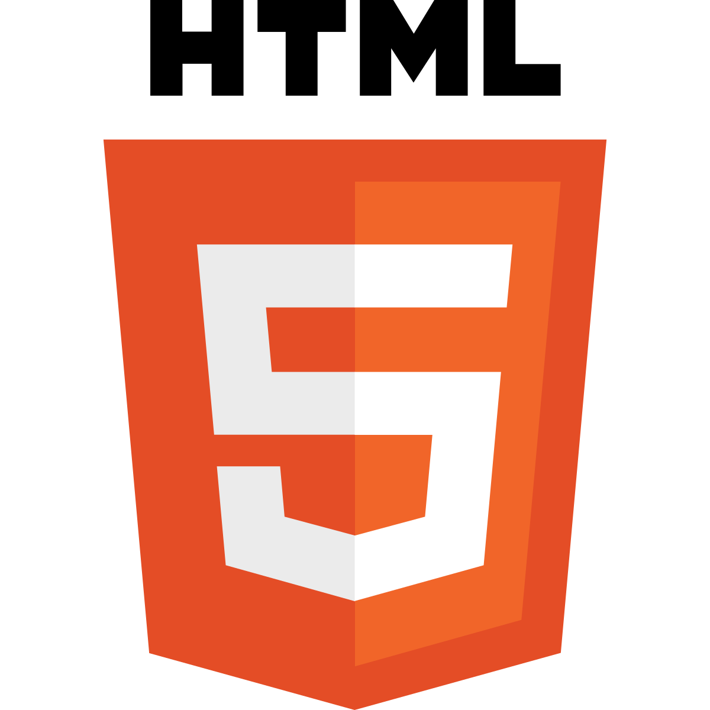

Mes Compétences

HTML

CSS

JavaScript

Wordpress

C#

PHP

Symfony
SQL
Bonjour, je suis Lucas, étudiant en deuxième année de BTS Services Informatiques aux Organisations (SIO) avec l'option SLAM (Solutions Logicielles et Applications Métiers). Passionné par le développement , j’ai acquis des compétences solides en programmation, en conception d’applications et en gestion de bases de données. Au cours de ma formation, j'ai eu l'opportunité de travailler sur des projets concrets, tels que la refonte de l’application métier d’une entreprise. Ces expériences m'ont permis de me familiariser avec des technologies comme C#, et de perfectionner mes compétences en analyse des besoins clients et en gestion de projet. Je suis motivé à poursuivre mon apprentissage en travaillant sur des projets ambitieux qui répondent aux défis actuels du développement logiciel. Mon objectif est de participer activement à la création de solutions sur-mesure et innovantes pour les entreprises. .
Mon parcours m’a permis de développer une expertise technique dans le domaine de l’informatique. De ma premières années d’études en BTS SIO SLAM, où j'ai acquis des bases solides, à mes premières expériences professionnelles chaque étape a été un tremplin pour mon évolution professionnelle.
J'ai eu la chance de collaborer sur des projets concrets et variés, qui m’ont permis de comprendre les enjeux réels du développement informatique et de la gestion de projets IT. Aujourd’hui, je continue d’apprendre et de me perfectionner afin de devenir un expert en développement d’applications métiers et en gestion de solutions logicielles.
Septembre 2023 - juin 2024
8 Avril 2024 - 7 Juin 2024
Septembre 2024 - Juin 2025
8 Janvier 2025 - 28 Février 2025
Le BTS Services Informatiques aux Organisations (SIO) forme des techniciens spécialisés dans la gestion et le développement des systèmes informatiques au sein des entreprises. Ce diplôme permet de répondre aux besoins croissants des entreprises en matière d’informatique et de nouvelles technologies. Il s’agit d’une formation de deux ans qui combine théorie et pratique, avec une forte composante de stage en entreprise. Il est possible choisir entre deux options : SISR et SLAM.
Spécificité : L'option SISR forme des techniciens capables de gérer et maintenir des infrastructures réseaux et systèmes au sein des entreprises. L'accent est mis sur la gestion des serveurs, des réseaux, de la sécurité des données et des systèmes d'information.
Débouchés : Les diplômés de cette spécialité peuvent exercer des métiers tels que administrateur système et réseaux, technicien en maintenance informatique, ou responsable de la sécurité des systèmes d'information. Ils peuvent travailler dans divers secteurs, allant des entreprises de services numériques (ESN) aux administrations publiques, en passant par les PME et grandes entreprises.
Spécificité : L'option SLAM prépare les étudiants à la conception et au développement d'applications logicielles adaptées aux besoins des entreprises. Les étudiants sont formés à la programmation, au développement d'applications web, à la gestion de bases de données et à l'intégration de solutions logicielles.
Débouchés : Les diplômés de cette option peuvent exercer des métiers tels que développeur web, développeur d’applications mobiles, analyste programmeur, ou chef de projet informatique. Les secteurs d’emploi sont variés : entreprises de développement de logiciels, start-ups, ou encore entreprises ayant des besoins en développement interne d’applications métiers.
Après l'obtention du BTS SIO, plusieurs options de poursuite d’études s'offrent aux diplômés. Parmi les plus courantes, on retrouve :
Le BTS SIO est donc un excellent tremplin pour démarrer sa carrière, avec de nombreuses opportunités d'évolution professionnelle et de spécialisations.
Durant mon BTS, j’ai réalisé plusieurs stages en entreprise, où j’ai travaillé sur des projets concrets en développement et en gestion de bases de données.
HTML
CSS
JavaScript
Wordpress
C#
PHP
Symfony
SQL
Je maîtrise plusieurs langages et technologies : HTML, CSS, JavaScript, PHP, SQL, et bien d’autres.
Voici quelques projets réalisés durant ma formation : développement d’applications web, création de sites internet, etc.
Découvrez les différentes épreuves du BTS SIO et les projets qui y sont associés.
Vous souhaitez en savoir plus ou collaborer avec moi ? Voici comment me contacter :